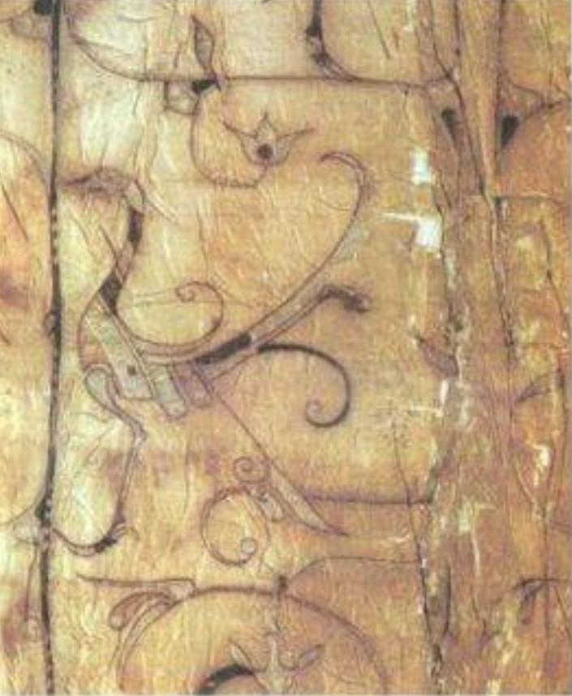

苗绣文化GIS系统
制作流程
苗绣流派
图案释义
传承人故事
数字展厅
云体验苗绣
苗绣答题
切换到卫星地图
地图卷帘
发展起源
苗绣分布
动画展示
热力图
搜索
上一页
第1页 / 共0页
下一页
苗绣分布热力图
稀疏
密集
颜色越红表示苗绣分布越密集
苗绣发展历程
×
原始社会
地区：
长江、黄河中下游流域
苗族先祖濮人流行雕题文身习俗，通过针刺皮肤并涂抹植物汁液形成永久花纹，图案多为图腾崇拜的自然意象。这种身体装饰艺术孕育了苗绣的原始审美，为后来织物刺绣奠定了文化基础与技艺雏形。

暂停
继续
停止
第1站
共5站
×
上一张
下一张